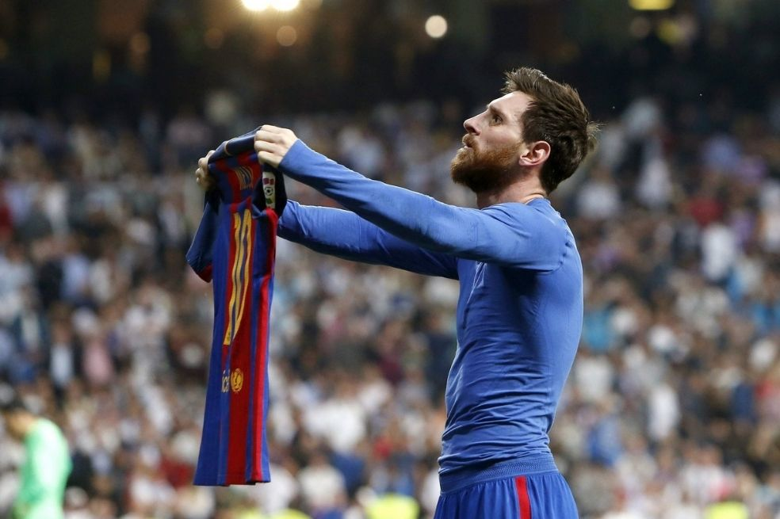
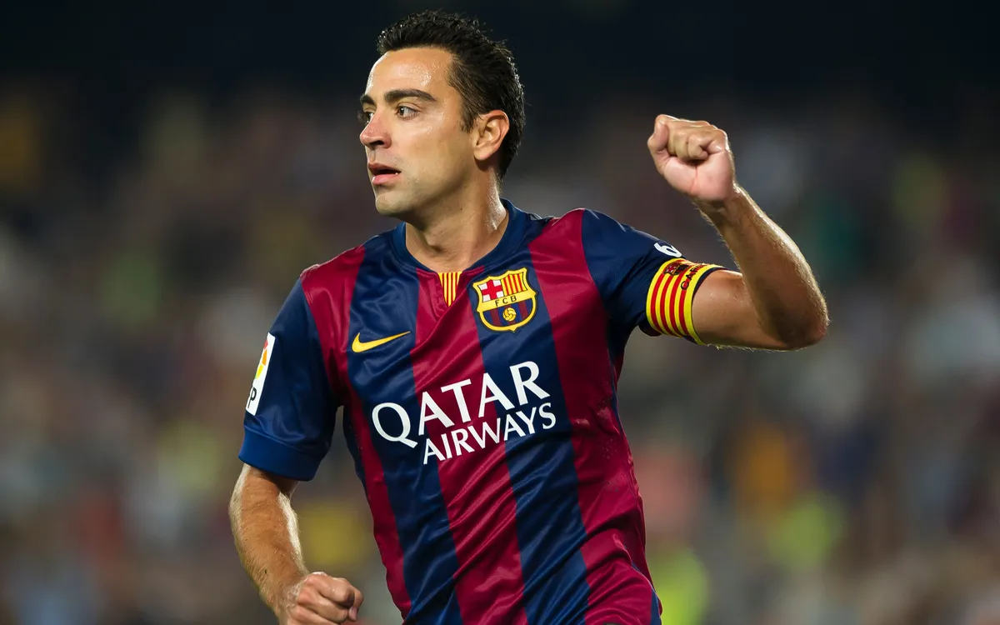
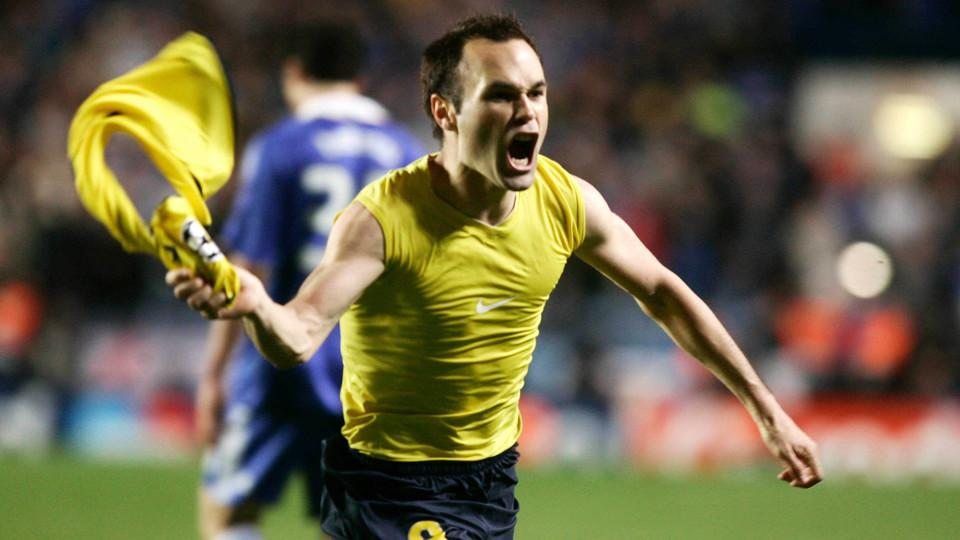
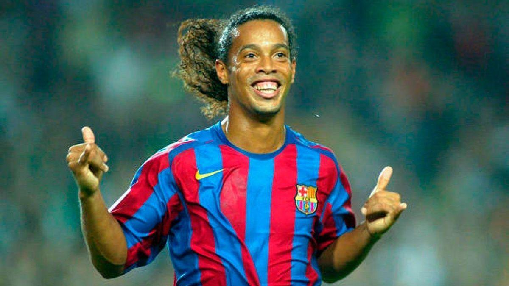
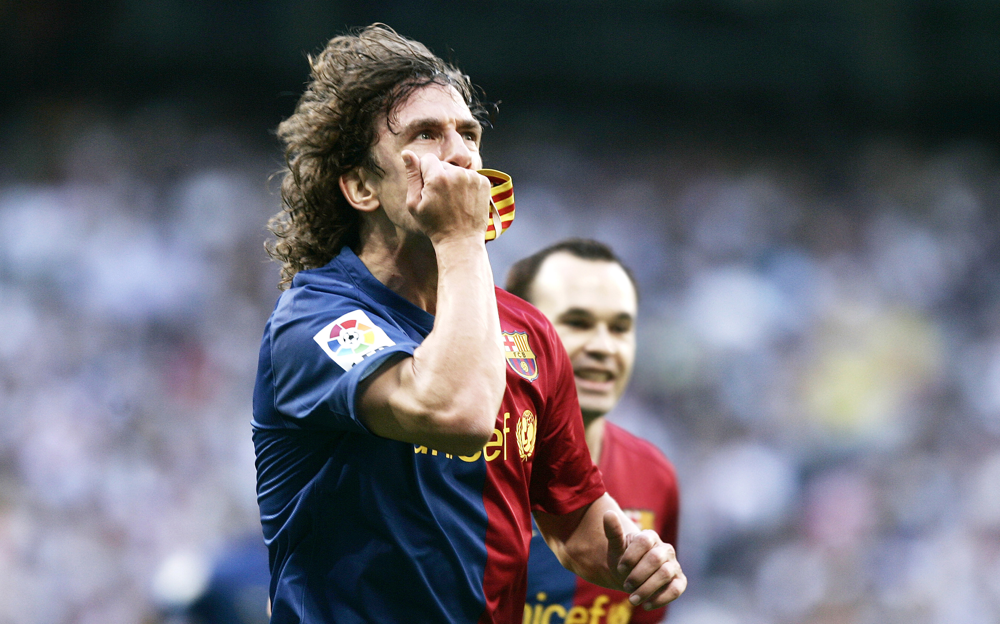
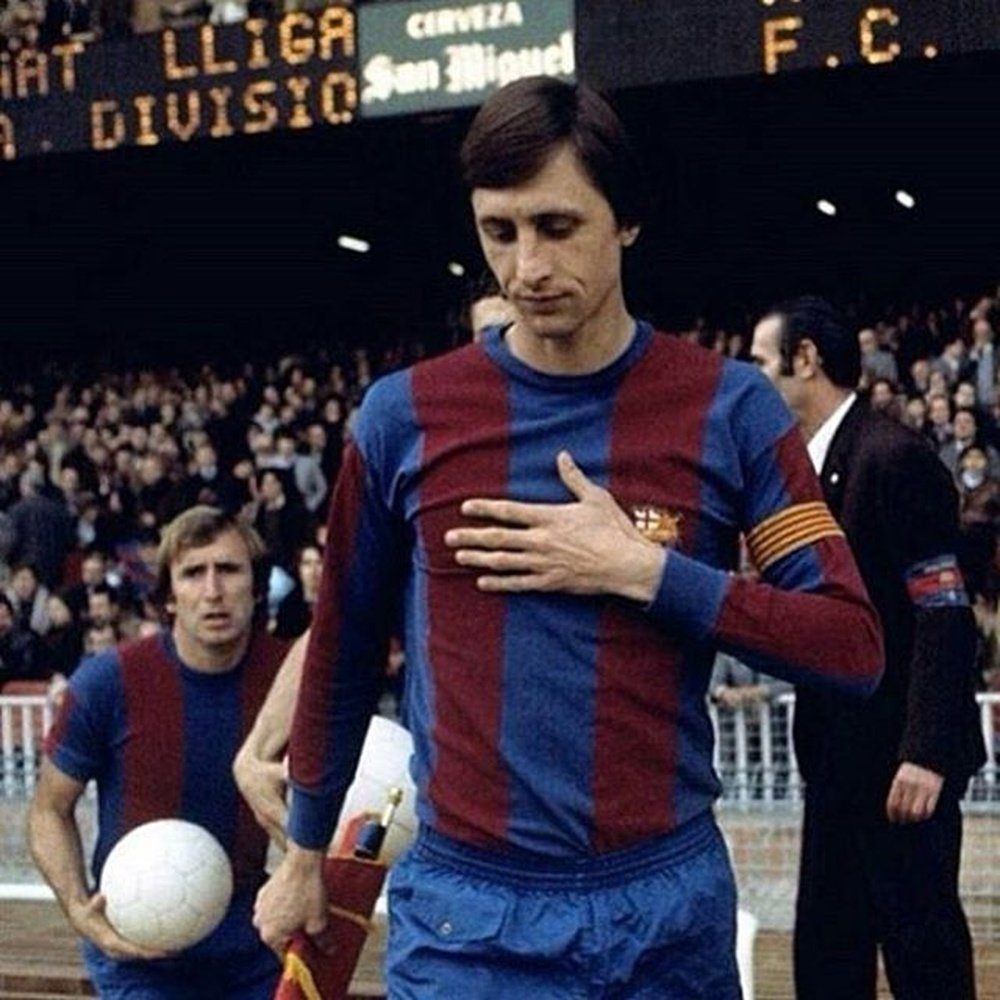
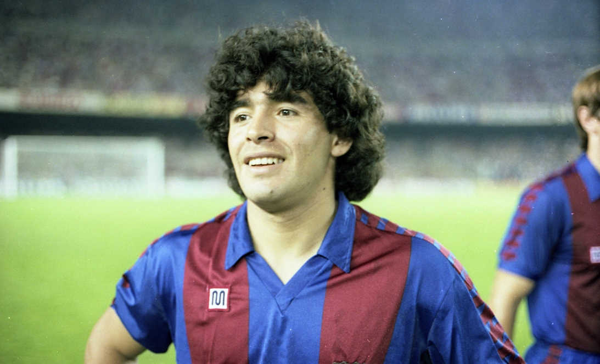
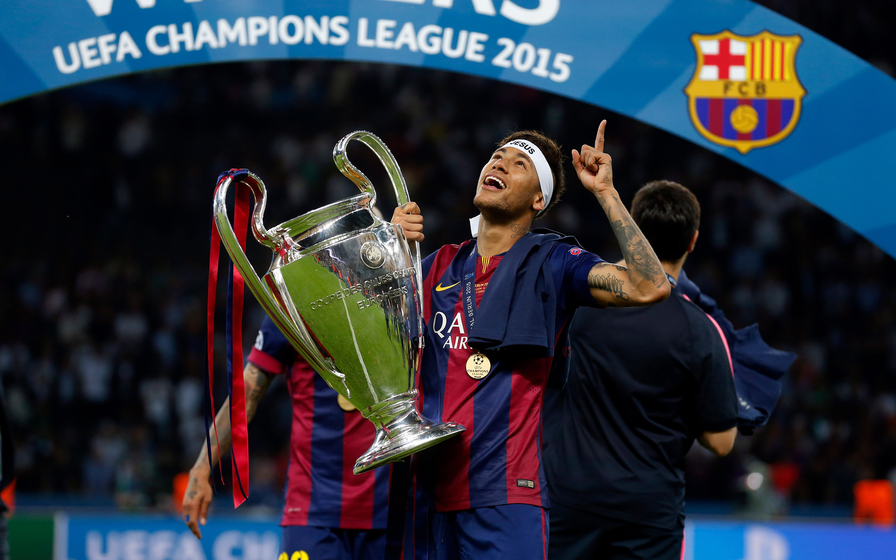
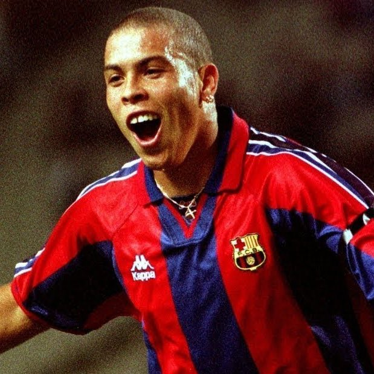

Delantero argentino, considerado uno de los mejores jugadores de todos los tiempos y de la historia del club.

Centrocampista español, conocido por su visión de juego y precisión en los pases.

Centrocampista español, famoso por su habilidad para controlar el balón y marcar goles decisivos.

Delantero brasileño, reconocido por su estilo de juego alegre y su habilidad para el regate.

Defensor español, conocido por su liderazgo y compromiso en el campo.

Joven promesa española salida de la masia (cantera del club), destacando por su velocidad y habilidad técnica.

Delantero y entrenador neerlandés, pionero del "fútbol total" y una leyenda en la historia del club.

Delantero argentino, considerado uno de los mejores jugadores de la historia del fútbol mundial.

Delantero brasileño, conocido por su habilidad para el regate.

Delantero brasileño, famoso por su velocidad y capacidad goleadora.